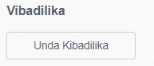
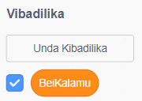
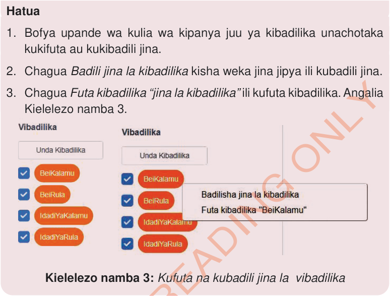

pendekeza jina litakalo kukumbusha kipimo kinachowakilishwa.
Programu ya Scratch inaruhusu kuunda na kutumia vibadilika. Kabla ya kutumia kibadilika, unatakiwa ukiunde. Umalizapo matumizi ya kibadilika, unaweza kukifuta. Fuatisha kazi ya kufanya namba 2 kujifunza namna ya kuunda, kubadili jina, na kufuta vibadilika kwenye programu ya Scratch.
Bofya bloku la Vibadilika.
Bofya kitufe cha unda kibadilika. Angalia Kielelezo namba 2 (a)
Andika jina la kibadilika kwenye sanduku la ujumbe litakalotokea. Kumbuka kupendekeza jina litakalo kukumbusha kipimo kinachowakilishwa. Kwa mfano: namba1, alama, jina, muda, BeiYaKalamu au Jumla.
Chagua kwa vihusika vyote kama kibadilika hicho ni cha vihusika vyote au kwa kihusika hiki pekee kama ni cha kihusika kimoja pekee. Kielelezo namba 2 (b)
Bofya sawa kutengeneza na kukihifadhi kibadilika. Angalia Kielelezo namba 2 (c).


Kielelezo namba 2: Kuunda vibadilika
Zingatia: Unaweza kubofya tena unda kibadilika kutengeneza vibadilika vingine.
1. Bofya upande wa kulia wa kipanya juu ya kibadilika unachotaka kukifuta au kukibadili jina.
2. Chagua Badili jina la kibadilika kisha weka jina jipya ili kubadili jina.
3. Chagua Futa kibadilika “jina la kibadilika” ili kufuta kibadilika. Angalia Kielelezo namba 3.

Kielelezo namba 3: Kufuta na kubadili jina la vibadilika